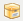

Links gebruiken in het vel Omschrijving
Als u een omschrijving plaatst in de sectie van een vermelding kunt u een link een andere vermelding in uw Novell Teaming site plaatsen of naar alles op internet.
Een link naar een vermelding in de huidige map maken
-
In de sectie van het Vermelding toevoegen formulier klikt u op de knop  aan het einde van de knoppenbalk in de HTML editor.
Teaming geeft een venster weer dat u in staat stelt de vermelding op te geven waar naar u de link wilt plaatsen.
-
In het veld doet u één van de volgende dingen:
-
Type de exacte paginatitel.
-
Klik op naast het veld, start met het typen van de naam van de pagina en selecteer de juiste titel uit het afrollijstje.
-
Gebruik de permalink functie die onder aan elke Novell Teaming pagina kan worden gevonden. Klik om dit te toen op de link in de voettekst aan de onderkant van de pagina waar u naar toe wilt linken, kopieer de URL en plak de URL in het veld.
-
-
Klik op .
Een link naar een pagina in een andere map maken
-
In de sectie van het Vermelding toevoegen formulier klikt u op de knop aan het einde van de knoppenbalk in de HTML editor.
Teaming geeft een venster weer dat u in staat stelt de vermelding op te geven waar naar u de link wilt plaatsen.
-
Klik op de link.
-
In het weergegeven veld typt u de naam van de map waarin de vermelding staat waar naar u de link naar wilt maken.
-
Als de opgegeven map verschijnt in de type-en-vind lijst klikt u er op.
-
In het veld veld geeft u de naam op van de vermelding waar u naar wilt linken of klik op om de type-en-vind functie te gebruiken.
-
Nadat u klaar bent met het typen van de naam of als u op de naam heeft geklikt in het type-en-vind afrollijstje klikt u op .
De titel met de link wordt ingevoegd in het veld .
Een link naar een externe pagina op het web maken.
-
In de sectie van het Vermelding toevoegen formulier selecteert u de tekst die u wilt converteren naar een link.
-
Klik op de knop
 .
.
Het link toevoegen/bewerken venster wordt weergegeven.
-
In het veld geeft u de URL op van de pagina waar naar u de link wilt maken.
-
Vul de volgende velden in:
-
Doel: Geef aan of u de link in hetzelfde venster of de link in een nieuw venster wilt openen.
-
Titel: Geef de titel voor de link op.
-
Class: Geef op hoe groot de link weergegeven moet worden.
Als u dit veld leeg laat wordt automatisch 12px geselecteerd. Dit is de standaard instelling.
-
-
Klik op .